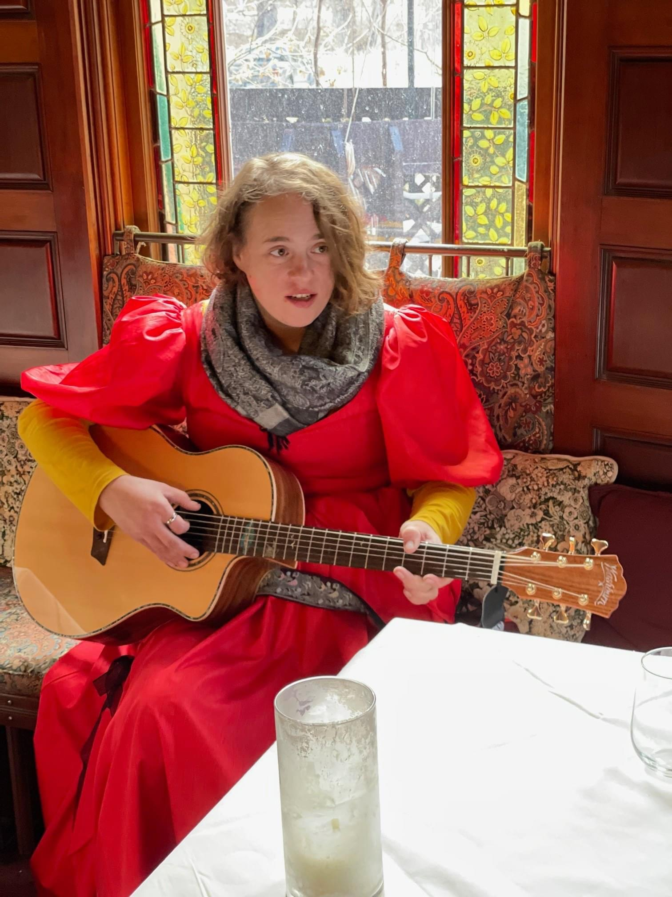
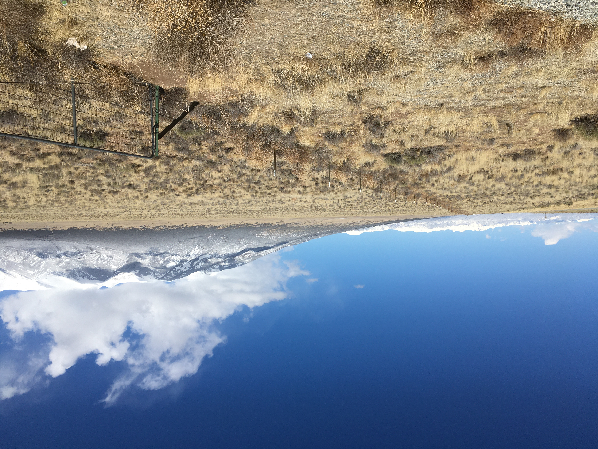

Explore Collections

Stan Brakhage

Cloud Foundation

Colorado Local Music

Pro Rodeo Hall of Fame

Murray Green

8MM

Landscapes

Rich Hawk

Pikes Peak Cog Railroad

Pikes Peak International Hill Climb

Hellhawk P-47 Airplanes

Ted Bundy

8MM Transfers

Colorado Local Art

Pikes Peak Cog Railway

Coffin Races in Manitou Springs

Vintage Horror Films

John F. Kennedy

Home Videos

Manitou Springs Heritage Center

Lowell Thomas

Peanut Mountain Climbing

Jim Bates

Imagine Little Bear

Old Colorado City Museum

Canon City Prison Museum

Mineral Springs in Manitou Springs

Skateboarding

Cuban Missile Crisis

Manitou Incline

Henry Soderberg

Wax Cylinders Music

Indianapolis 500

Pueblo Rawlins Library

Experimental Video

Gail McComas

Glenn Bozell Jacobs Advertising

Kit Carson Museum

USAFA

NCAA Hockey
Explore Colorado History by Timeline
1860s
Mining camps and frontier settlements
1870s
Territorial growth and rail surveys
1880s
Railroads and western expansion
1890s
Mining booms and new towns
1900s
Industry and agriculture
1910s
Growing cities and industry
1920s
Tourism and early highways
1930s
Depression-era Colorado
1940s
War years and modernization
1950s
Suburbs and postwar growth
1960s
Space age and cultural change
1970s
Tourism and outdoor recreation
1980s
Technology and development
1990s
Modern Colorado
2000s
Digital era archives
2010s
Contemporary Colorado

Featured Archive Item
Admiral Byrd Antarctica Expedition
Rare archival motion picture footage documenting the historic Antarctic expeditions.
View Collection →
8,896+
Records
160+
Years Covered
64
Colorado Counties
147
Unique Archived Collections